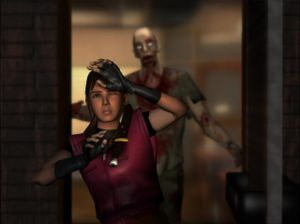
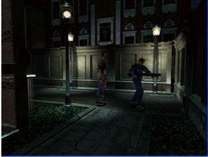
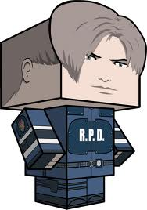
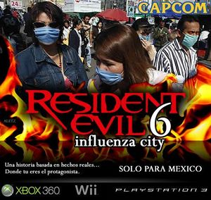

Resident Evil
 De: La Frikipedia, la enciclopedia extremadamente seria.
De: La Frikipedia, la enciclopedia extremadamente seria.
De la serie Videojuegos:
Resident Evil

| Desarrollado por:
|
Capcom
|
| Distribuido por:
|
Noentiendo
|
| Diseñado por:
|
un muerto
|
| Motor
|
un cerebro
|
| Género(s)
|
Survival Horror(hasta el 4)
|
| Fecha de lanzamiento:
|
2005
|
| Modos de juego:
|
Matar
|
| Requisitos:
|
Ser un zombie
|
| Disponible en:
|
Las tiendas, Raccoon City y cementerios
|
| Formatos:
|
Gamecube
|
| Edades:
|
Pero por favor, si lo juego hasta mi hermana de 2 años
|
| Puntuaciones:
|
100 + 1 live
|
En la corporación Paraguas no vendemos nada, así que largo!
Para otros usos de este término/definición/cosa, véase Resident Evil (desambiguación).
Resident Evil es un simulador virtual donde puedes investigar qué hacer en medio de una horda de zombies (muchos zombies) (de verdad).
"Guía de bolsillo para cuando una empresa maléfica (paraguas, si es que con ese nombre se le ve maléfica) empiece a experimentar con humanos y juegue a ser Dios, pero, tras un atentado, los experimentados se vuelvan muertos vivientes y empiecen a matar a los supervivientes; esto hasta que venga un grupo de 7 Forros y salven la situación, cuando mas de 200 personas no lo han podido hacer; pero de los 7 Forros, sólo saldrán el guapo, la tía que te empomarias hasta el cpu y, a lo mejor, el colega de confianza el negro. Lamentablemente, después vendrán unos gilipollas de la empresa y dejarán salir por amor al arte de nuevo a los monstruos, haciendo que la ciudad sea totalmente dominada por muertos y ... ¿Qué harías?"
Este iba a ser el título original, pero ocupaba el 98% de la memoria del disco, de modo que lo redujeron a "Resident Evil" (Residuos Evilentes) para poner todo lo demás.
Las cosas que aprendí con estos simuladores
 Claire flasheándose con su propia granada
- si eres negro siempre morirás primero en resident evil
- Todas las tías no zombi están buenas, y las feas, son zombis.
- Raccoon City es una ciudad de tráfico (confirmado por todas las hierbas verdes que hay).
- Raccoon City en realidad es Bloody City.
- Este tipo de juego es survival horror.
- Los zombies muerden y van hacia ti.
- Algunos zombies te quieren violar.
- Los zombies muerden.
- Los zombies gimen en 3 versiones a elegir, Gemido 1 / Gemido 2 / Gemido que te atrapo.
- Los zombies te hacen chupetones en el hombro derecho, NUNCA en el izquierdo.
- Que en el juego la mayoría de infectados eran gemelos.
- Que leon se confundio en el pueblo con las plantas verdes pensando que eran la cura pero era marihuana
- Que se pronuncia residen ivol
- Que por casualidad podemos observar que cuando te viene una horda de zombies casi todos tienen la misma ropa.
- Que a Raccoon City les encantan las puertas ya que te pasas todos los juegos cruzando puertas y más puertas.
- Por muy desnudo que esté el zombie, nunca mostrará sus genitales.
- Los zombies escriben artículos en la Frikipedia.
- AAAAAAAAAAAAAAAAAAAAAAAAAAAAAAAAAAAAAAAAAAAAAAAAAAAAAAAAAAAAAA.
- AAAAAAAAAAAAAAAAAAAAAAAAAAAAAAAAAAAAAAAAAAAAAAAAAAAAAAAAAAAAAAAA?
- Coge cualquier objeto de mierda del suelo para sobrevivir (clips, llaves, Mecheros, etc).
- No importa que la muerdan, la golpeen, se lastime, se corte, este en coma, o este sucia (porque nunca se baña) Jill siempre luce linda y supermodelo.
- Guillermo Birkin era drogadicto, de ahí su afición a pincharse jeringuillas, Es pederasta, y por ello está buscando a su hija.
- En el RE4 jamas veras a un zombie pero si los efectos en animales.
- En el Resident Evil 4 y 5 las puertas no tienen soporte, por lo que se abren hacia afuera y hacia adentro.
- Los zombies son pobres y no confian en los bancos de ahi el por que cuando matas uno sale cartuchos de tu grapadora y dinero
- Si en el RE1 (al principio) vas por una puerta que no debes y te quedas sin balas, ya puedes apagar la consola si quieres.
- Sacarte las dudas de que: seas policía, te compres una mansion, ir a la comisaria, ir a España, etc.
- Si te hieren de gravedad, no vayas al hospital. Fúmate unas hierbas de colores que quedas de la nuca.
- Si juntas 3 hierbas de colorines (No vale echarles pintura) se fusionan formando un cumulo de polvo
- Capcom ha sido denunciada por inducir a los amantes de RE a esnifar polvos de planta de chumbera (de ahi que en el resident evil 5 se echan aerosol)
- No importa cuantas veces te muerda un zombi nunca vas a estar infectado
- Los zombies invadieron la nave de Arc the Lad, de ahí, las imagenes del ending
- Los zombies solo atacan por la noche.
- Los personajes no comen. (salvo los zombies claro)
- Los zombies poseen un léxico fluido y exquisito, de ahí que no quieran malgastarlo con humanos.
- Por cada 50 zombies que destruyas, aparecerá un monstruo mas ágil, listo y grande que te quiere romper el culo (sin Forro) extremo cuidado.
- Si le echas sal al Licker, morirá al momento, lo malo es que la sal no existe en Racoon City
- Nunca se sabrá si Némesis murió realmente en Resident Evil 3, y como carajos hizo Nicolai para cruzar la mitad de la ciudad a pie y sobrevivir sin un rasguño y uno haber tenido que arreglar un tren para recorrer lo mismo que el, con la diferencia de que el tren se estrella y te ves rodeado de tantos zombies que te cagas.
- Puedes dejar un objeto en el baúl de la comisaría y sacarlo de otro baúl a 3 kilómetros del primero.
- Los zombies sienten predilección por los pasillos llenos de ventanas.
- Puedes hacer el paso de michael el negroblanco jakson.
- La gente que encuentres en el transcurso de la historia suele morir frente a ti, generalmente de un modo desagradale y violento.
- El cuchillo no sirve para nada, ni para suicidarse
- Tus enemigos también pueden ser perros (zombies), cosas babosas gigantes (zombies), tu suegra (No zombie cuidado!) y Barney el Dinosaurio (Este no es Zombie, pero igual ten cuidado!)
- Los zombies pueden buscarse la vida, aunque les arranques las piernas con una escopeta.
- Teniendo uno un armamento (Tiros, Cartuchos, Bombas, Granadas), hay que buscar una simple llave para abrir una puerta. ¿Por qué no volarla?
- La pistola del RE3 no sirve para una mierda, por que aunque le dispares por media hora a los zombies (primero se te acaban los cartuchos) estos nunca caeran (puede que les de cosquillas o simplemente caigan de aburrimiento).
- En el RE4 a los habitantes del pueblo les gusta gastarse bromas metiendo serpientes en las cajas.
- En el Resident Evil 4 los zombies hicieron un paro por un aumento de cerebros.Por esa medida se los remplaza por aldeanos cabreados son igual de estúpidos pero hablan (en Español)y van a los pedos hacia ti.
 Leon demostrando sus sentidos de gacela
- Los negros, como Marbin son mas blanco despues de muertos.
- En las alcantarillas hay cocodrilos gigantes que muerden.
- Que Alfred Ashford (un metrosexual/transexual/homosexual sin vida que se disfraza de su hermana y que se ríe como bob esponja, pero mas retrasado) siempre sera mejor que tu aunque lo niegues.
- Que Marcus (ese tío del RE Zero que canta como una mujer) tiene una opera que se esta produciendo ahora en austria (boletos en taquilla... miento, ya se agotaron).
- Que el visor de los rifles de caza tienen laser.
- Si no eres tan sexy como Ada Wong o Leon, no sobreviviras.
- Que en el RE3 una simple campana le impide pasar a Jill a la calle del hospital, en cambio Carlos la empuja y listo;esto demuestra el machismo en este videojuego.
- Que Leon ahora se dedica a salvar cada 20 minutos a Ashley que siempre anda de parranda
- Si matas a muchos zombies (o uno solamente), te metes por una puerta y vuelves por la misma, veras que sus cadaveres han desaparecido sin dejar rastro alguno ¿como lo haran?
- Siempre que veas una estatua: Manoseala! Seguramente aparezca un libro o una llave...
- Que algún friki se ha tomado la libertad de esconder llaves entre otras cosas por toda la ciudad para que luego tú las busques
- A los zombies siempre les dara un hueva correr pero eso si cuando esten tan cerca se echaran a tus pies para que les bueles la cabeza
- No importa cuantas veces te carges a Nemesis el tio siempre vuelve a salir
- Que a los ciudadanos de Racoon City les encantan las armas, puedes encontrar armas y balas en cualquier punto de la ciudad.
- Que Nemesis le tiene miedo a los baules por eso no entra a los cuartos donde hay uno de ellos
- No importa cuantos zombies te carges siempre saldra su gemelo en su defenza
- los zombies no se comen entre ellos por que le gusta la carne de polica, chica o agente encubierto de gobierno
- No importa cuanto corras Nemesis siempre te alcanzara
- España le robo las planta verde a Raccoon City
- los zombies de RE4 siempre te mantendran al tanto gritandote ""detras te ti imbesil""
- En RE4 no importa cuantas veces te lance un rastrillo el aldeano siempre tiene uno listo en el bolsillo
- El tio de la sierra en RE4 es el padre de Chester en Los padrinos magicos
- Siempre la puerta que sige se abre con la llave que queda del otro lado de la ciudad
- Nemesis fue el unico no humano en aprender a abrir las puertas
- El RE1, 2, 3 no importa cuantas veces le des un cuchillazo a un zombie nunca morira.
- El cuchillo es el arma mas util en re 4..... y que lo anterior es mentira
- Que si te quedas sin balas en el RE 4 solamente matas con cuchillo a 2 zombies y ya podras tener 23345365354 balas porque ellos
se las meten por el culo y no se la sacan las llevan pese a no tener armas...
- si te encuentras un superviviente no te encariñes con él que a los 2 minutos de haberlo conocido se lo merendarán los zombies o algun otro bicho feo
- menuda ciudad esta hecha Raccoon City con esas calles tan estrechas parece mi pueblo
- si ves que la prota está buena no empieces a imaginártela desnuda que los creadores esperan que eso te distraiga y un zombi te pueda comer la cabeza mientras que como jilipollas piensas en como será su traje desbloqueable
- si en RE4 te quedas sin munición y aparece el doctor chavita ya puedes darte por muerto
- en RE5 les pudo la gandulería y decidieron copiar el anterior cambiando 3 ó 4 cosas por eso debería llamarse RE 4.5
- no importa cuanto le dispares al marica de WESKER el tío siempre esquiva las balas
- Que el negro siempre muere
- Que con solo coger un arma ya se aprende a disparar sin necesidad de practicar ( porque vamos la Claire esa no había disparado en su puta vida y después la vemos con una puntería...)
- Que las fuerzas de elite son mierda comparadas con un policía novato y una chica que no ha disparado en su vida
- Que si le pegas un tiro en la cabeza a alguien tranquilo no lo mataras solo le dolerá y luego como si nada .Y si le das en la pierna solo se arrodillará y luego andará como si nada
- Que la prota debe vestirse como puta para que alguien se digne a jugar solo para desbloquear su traje mas hot
- Que es imposible acabar con los regeneradores (aunque siempre está el machote que les da con el cuchillo, RIP)
- Que en el RE5 cometieron un error garrafal al matar a Wesker
- Que a medida que avanza la saga los juegos se hacen mas cortos
que la polla de del niño loco alemán puesto que hasta un subnormal se acaba los dos últimos en dos días (si eres muy retrasado puede que 3)
- Que para que los protas puedan avanzar por fuerza tienen que morir casi todos (por no decir todos) los que van con ellos
- Que el enemigo de la motosierra es medio saltamontes ya que el tio llega a plataformas a 50m o mas con un salto mientras que tu
como imbecil que subes la escalera para salvar tu puñetera cabeza te jodes y subes a la antigua (con manos y piernas)tardando casi 20 años (verídico)
- Que en el RE4 si matas al buhonero
(muestra de tu subnormalidad ya que matas al único marica que no te ataca) no le puedes robar ya que Leon es tan imbécil que ni para eso le da el cerebro
- Que Leon es gay porque con las macizas que se ha cruzado se pasa sus aventuras a dos velas (o a pajas que hay secuencias donde no vemos lo que hace)
- Que en este juego les encanta hacer saltar en pedazos todo (en todos los juegos el sitio donde estabas jugando explotaba)
- Que los hunters son producto de noches locas de lobezno en el zoo de las vegas, de ahi sus garras
- Que las peliculas casi no se parecen al juego
- Que todas las protas estan buenas
- Que el RE4 casi no da miedo (el casi viene si te quedas sin municion enfrente de un regenerador ahi si que mas te valdra tener miedo)
- Que el RE5 es el primer juego de "terror"que sucede de dia, a plena luz del dia , de ahi que no de ni pizca de miedo
- Que hunk es el puto amo
- Que Chris es gay ya que en mucho tiempo solo pensaba en Wesker y no en la macizorra de Jill
- Que en ningun RE se puede caminar mientras disparas pero si morir
- Que no importa lo que le hagan a tu personaje (mordidas, cortes, puñaladas, disparos (si aunque pocos hay enemigos que te disparan)golpes, incluso empalamientos
por el culo, cosas que por si solas matarian a una persona)que no le veras ni una sola cicatriz y solo retrocedera un poco se curara con hierbas y como si nada seguira andando y disparando
- Que estar maciza es fundamental para sobrevivir y si no te lo crees mira la pagina del Resident Evil 0 para convencerte
- Que con una mierda de patada paras a un gandullon con una supermotosierra, a dos locas con motosierras, un ciego con garras y un negro enorme con ametralladora siempre y cuando halla pringaos mas pequeños por que si no date por muerto
- Que al pegarle un tiro a los ganados de Resident Evil 4 solo se doleran un ratito cuando una persona normal caeria muerta asimismo si es en la pierna solo se arrodillan y se levantan como si nada cuando lo normal es ya no poder levantarse
- Que para sobrevivir hay que ser o un cachas descerebrado o un chulo putas de tres al cuarto ah y si eres tia tienes que poner cachondos a todos con ropas ajustadas o bien con transparencias o minifaldas supercortas o tops que apenas te tapen (ver Jill Valentine)
- Que los personajes secundarios son fundamentales ya que si no los mounstros, zombies u otras criaturas se moririan de hambre y los protas no podrian avanzar
- Que los protas son tan
jilipollas valientes que prefieren quedarse a pelear en vez de huir como los inteligentes claro que si huyeran no habria juego como los cobardes
- Que correr es inutil el mounstro que te quiera romper el culo siempre te pillara
- Que en el re4 aunque estes jugando con Ada siempre te van a decir "matalo" "miralo esta herido" etc. como si fuera hombre.
 si
Batman y STAR WARS lo han hecho, venga pallo compra el inigualable lego Resident Evil
- Que no importa lo que hagas siempre vez morir
como idiota a tus compañeros delante tuyo sin que tu hagas algo
- Que nadie sabe como pero los zombies saben hablar aunque tengan medio cerebro y solo 1 ojo y lo único que saben decir son groserías. (que ironía.)
- Que los zombies son jebis (eso explica lo de maquinas lentas de matar)
- Que los zombies al ser jebis crearon una banda... White Zombie
- Que el buhonero se
violaba golpeaba a Ashley mientras tu no veias
- Que puedes matar de un huevazo a un zombie africano, pero no hacerle daño a un cocodrilo.
- Que en ningun juego aparecen niños debido a que
te los violaste Pedobear se los llevó a todos
- Que por más que busques, no encontraras comida
- Que puedes Matar a una plasta negra echa a base de gusanos y cadaveres con un arma lasér pero no abrir una puerta con llave
- Que cuando pateas a un Ganado con Krauser, le vuelas la cabeza
- Que en Racoon City solo tenian perros Doberman, y cuervos como mascotas
- Que Ninguno de los personajes de Los Residents Evil: 2, 3, y Outbreak (1 y 2); se cruzan en la historia
- Que si huyes de Nemesis se teletransporta a donde vayas
- Que los zombies desaparecen porque se van a hacer una
Orgía fiesta en el infierno
- Jill, Claire, Ada, Rebecca y Sheva son más
putas inteligentes que tu
- Que los zombies originales al quedarse sin trabajo se fueron a trabajar en Plants vs. Zombies.
- Que no importan cuantas veces te muerdan en el juego, a excepcion del Outbreak
porque es una mierda no te conviertes en zombie mientras no mueras, mientras que las otras personas en la ciudad con un rasguño se convirtieron ¬.¬
- Que Nemesis y grave digger nunca se encuentran en el camino porque tine miedo que se lo coja
- Que no puedes trepar una barda por mas baja que este, porque
te da hueva no tienes la llave y al parecer tu personaje es tan aterrorizado que nunca piensa en ello
- al parecer a todos les encanta poner acertijos
- en Racoon City el unico
pubert@ niñ@ en toda la ciudad es Sherry
- Que las casas de los aldeanos son de muy buena calidad ya que por mas misilas que le dispares siquen intactas
- Que los zombies nunca salen de su lugar de origan pero si pueden entrar visitantes
- Que los aldeanos son de mierda ya que cuando los matas se evaporan
La saga de Resident Evil
 Resident Evil 6, el futuro éxito de ventas por estar basado en un hecho real
También hay películas en versión documental de un hecho real:
Silent Hill, El simulador enemigo
Artículo principal: Silent Hill
Este simulador es muy parecido en mecánica e inteligencia artificial, pero aquí los enemigos te vomitan para matarte, y, en vez de una empresa maléfica, es una maldición de un inspector de hacienda.
Ver también
Enlaces externos
|
|
 Shooter Shooter
 Terror Terror
 Velocidad Velocidad
 Rol Rol
 Estrategia Estrategia
 Aventuras Aventuras
 Fight! Fight!
 Clásicos Clásicos
 Deportivos Deportivos
 Aventura gráfica Aventura gráfica
 Novela visual Novela visual
 Personajes de videojuegos Personajes de videojuegos
|
Autor(es):
- Nexo
- Fordus
- Raiben
- Sebator
- Frikiman
- Alex2610
- Badespi
- Chopin60
- Z
- El Sevillano
Frikipedia 2005-2016, Licencia
GFDL 1.2 - Extraído por FrikiLeaks